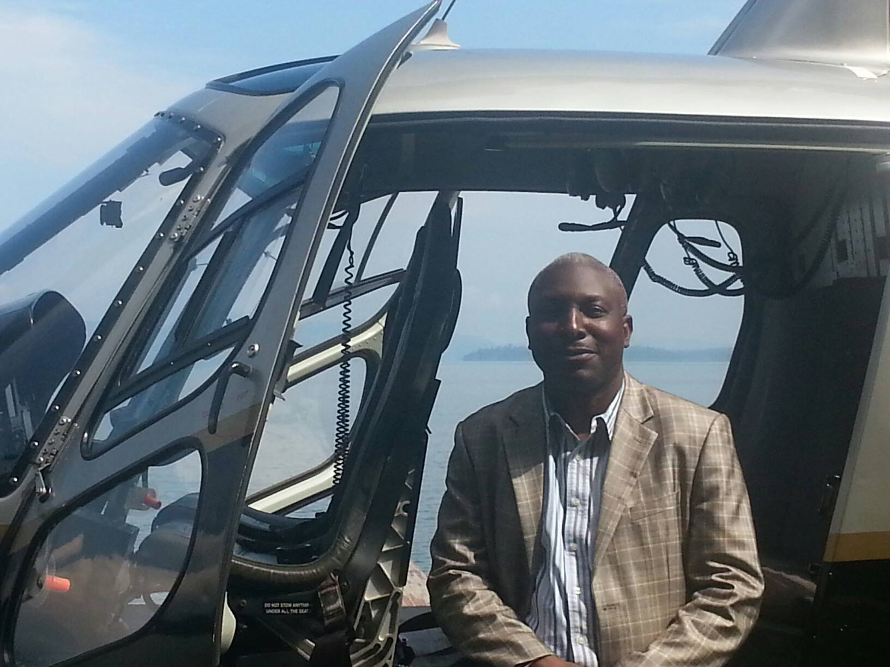

Directeur Provincial – Office des Voiries et Drainage (Kinshasa)
Engagé dans la modernisation des infrastructures urbaines, la réhabilitation des routes et la lutte contre les érosions à Kinshasa.
Voir les réalisationsIngénieur et gestionnaire des infrastructures urbaines, Alain Tshimbalanga dirige les opérations provinciales de l’Office des Voiries et Drainage à Kinshasa.
Sous sa direction, plusieurs projets de réhabilitation routière et de drainage ont été réalisés pour améliorer la mobilité urbaine et réduire les risques d’inondation.
Il participe activement aux programmes d’urgence visant le curage des caniveaux, la modernisation des voiries et la gestion des eaux dans la capitale congolaise. :contentReference[oaicite:2]{index=2}
Travaux sur plusieurs axes stratégiques de Kinshasa pour améliorer la fluidité du trafic.
Construction de collecteurs et ouvrages pour stabiliser les zones à risque.
Curage des caniveaux et amélioration du système d’évacuation des eaux.
70%
Taux d’avancement de plusieurs projets
+10
Axes routiers réhabilités
Millions $
Investissements en infrastructures
Les travaux de réhabilitation menés ont permis de désengorger plusieurs axes et d’améliorer la circulation dans la ville de Kinshasa, avec un taux d’exécution dépassant 70% sur certains chantiers. :contentReference[oaicite:3]{index=3}
Office des Voiries et Drainage – Kinshasa
Engagement pour une ville moderne, accessible et durable.